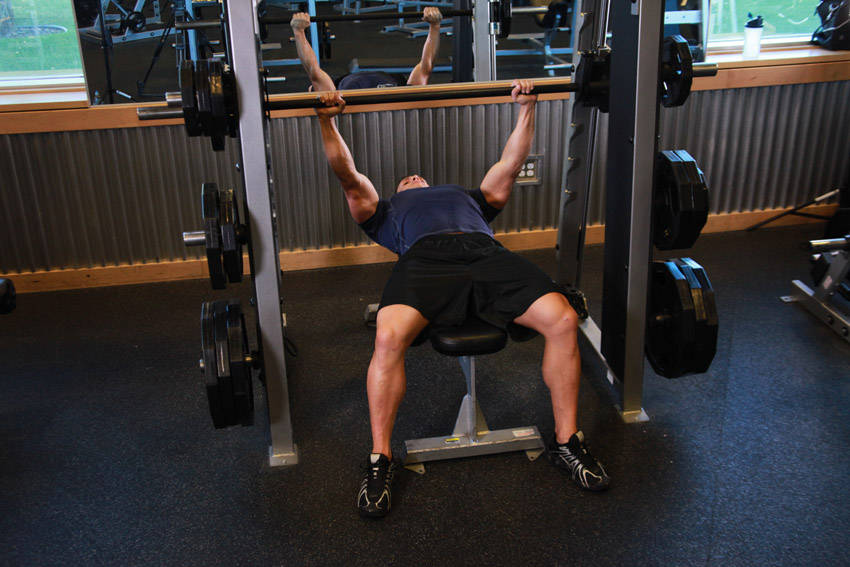

- Place a flat bench underneath the smith machine. Now place the barbell at a height that you can reach when lying down and your arms are almost fully extended. Once the weight you need is selected, lie down on the flat bench. Using a pronated grip that is wider than shoulder width, unlock the bar from the rack and hold it straight over you with your arms locked. This will be your starting position.
- As you breathe in, come down slowly until you feel the bar on your middle chest.
- After a second pause, bring the bar back to the starting position as you breathe out and push the bar using your chest muscles. Lock your arms in the contracted position, hold for a second and then start coming down slowly again. Tip: It should take at least twice as long to go down than to come up.
- Repeat the movement for the prescribed amount of repetitions.
- When you are done, lock the bar back in the rack.